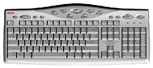
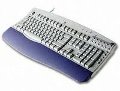
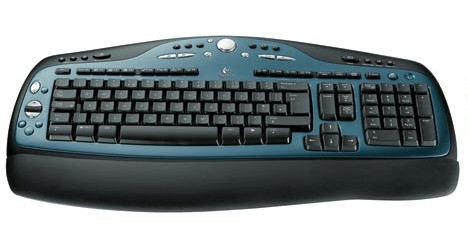
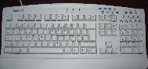

{kind=link}

Recent keyboards are basically MF II keyboards, but provided with a bewildering variety of additional keys.
The keyboards are grouped according to manufacturer.
Petr Slansky <slansky@usa.net> writes:
Internet buttons: e0 13 online community button (people icon), e0 14 online Compaq button (Q icon), e0 15 online services button (bulb icon), e0 1e online e-mail button (envelope icon), e0 21 online Search button (magnifier icon), e0 23 online start button (i icon), e0 32 online commerce button (shopping basket icon), e0 68 Quick Print button (printer icon), e0 1f Favorite Application Launch button (racket icon), e0 5f Sleep button
CD/DVD player buttons: e0 22 Play/Pause, e0 24 Stop, e0 19 Next Track, e0 10 Previous Track, e0 2c Eject
Volume Control buttons: e0 30 Volume increase (+), e0 2e Volume decrease (-), e0 20 Mute.
A Compaq keyboard that I have here, has the usual setup (with Windows keys) plus a top row of eight buttons, that produce scancodes e0 23, e0 1f, e0 1a, e0 1e, e0 13, e0 14, e0 15, e0 1b. These keys do not produce any codes in scan code Set 3.

(Information from Dennis Bjorklund <dennisb@cs.chalmers.se>
and others.)
The IBM Rapid Access keyboard has 14 extra buttons and two more leds than a normal PC keyboard. By default, these buttons do not generate any scancodes. To activate them one has to send the sequence ea 71 to the keyboard. Once that is done the extra keys generate normal e0xx sequences. To turn off the extra keys you send ea 70.
These 14 keys send the following scancodes (when activated):
e0 25 (Suspend), e0 26 (Help), e0 32 (Prg 1), e0 17 (Prg 2), e0 30 (Prg 3), e0 2e (Prg 4), e0 19 (Play CD), e0 24 (CD Stop), e0 22 (CD Pause), e0 1e (Vol -), e0 20 (Vol +), e0 23 (Prev song), e0 21 (Next song), e0 12 (Mute).
The Suspend and Mute buttons have extra LEDs on them. Sending the sequenceeb 00 ff to the keyboard makes all five LEDs lit up for a moment. The sequence eb 00 04 lights the Suspend LED (behind a waning moon). The sequence eb 00 20 makes the Mute LED blink. The sequence eb 00 80 locks the keyboard; if the Mute LED was blinking it now is lit permanently. Sending eb 00 ff unlocks the keyboard again.
The command ec returns 0c 01 (untranslated) which becomes 3e 43 in translated scancode Set 2. (Possibly an ID?)
Dennis Bjorklund writes:
Here is the hack I use to send commands to the keyboard. After you have
compiled it you can do things like send_to_keyboard ea 71,
but don't run two of these at the exact same moment, and don't send
strange codes because the keyboard might lock up.
My computer runs this at every startup. After that the extra buttons on the rapid access work just fine in XFree86.
/* gcc -O2 -s -Wall -osend_to_keyboard main.c */
#include <stdlib.h>
#include <unistd.h>
#include <sys/io.h>
int main(int argc, char *argv[]) {
int i;
ioperm(0x60, 3, 1);
for (i = 1; i < argc; i++) {
int x = strtol(argv[i], 0, 16);
usleep(300);
outb(x, 0x60);
}
return 0;
}

This keyboard has a top row of seven color-coded buttons. On the upper right a "wheel" composite button with six parts. Below it a blue button ("mute"). Finally, the usual block with four arrow keys has been enlarged by two more keys ("page left" and "page right").
Keys:
e0 25 (Green, "Internet"), e0 26 (Blue, "Internet shopping"), e0 32 (Yellow, "IBM Web support"), e0 17 (Purple), e0 30 (Red), e0 2e (Cyan, "Help"), e0 5f (White, "Standby" - has a LED), e0 20 (CD stop), e0 22 (CD play), e0 21 (Volume D), e0 23 (Volume U), e0 24 (CD back), e0 12 (CD fwd), e0 1e (Mute - no LED).
(In translated scancode Set 3, these become 41, 3f, 3d, 3b, 3c, 66, --, 69, 6a, 6b, 6c, 6d, 44, 68, respectively.)
The "back" ("page left") and "forward" ("page right") keys generate ALT+left and ALT+right respectively: 38 e0 4b (release sequence b8 e0 cb) and 38 e0 4d.
The commands ea 70 and ea 71 serve to switch off (resp. on) the special keys. (These are on by default, but can be switched off.) However, the white Standby key is always on.
The white Standby button has a LED (that is flashed during a reset).
It is set by the command eb 71
and cleared by the command eb 70.
George Staikos <staikos@0wned.org> writes:
I have an IBM ThinkPad i1460. It has the IBM EasyLaunch<tm> keys.
These are four multicoloured keys up at the top of the keyboard
for "Home Page", "Search", "Shop", "Mail". They dont' seem to create
any keyboard events at all. The keyboard interrupt doesn't trigger,
showkeys doesn't see them do anything, and in DOS, a simple
sequence of BIOS calls doesn't see them either.
Also, being a laptop, it has an FN key. This key generates 55.
Jonathan DeBoer <deboer@ugrad.cs.ualberta.ca> reports:
This keyboard has 18 unusual keys.
e0 7a (WWW), e0 32 (History), e0 21 (Open URL), e0 23 (Home), 38 2a 0f 8f (key press) 8f b8 aa (key release) (Send To Back) - this sequence simulates Alt+Shift+Tab, but contains two Tab releases, e0 17 (Print), e0 10 (Back), e0 22 (Forward), e0 24 (Stop), e0 19 (Refresh), e0 1e (Search), e0 12 (Find), e0 26 (Add Favourite), e0 18 (Open Favourites), e0 20 (Hot Links), e0 30 (Scroll Up), e0 2e (Scroll Down), e0 25 (Logitech).
Ryan Lortie <desertangel@globalserve.net> writes:
The "Logitech" key is used as a modifier.
In windows, Logitech-Keypad+ increases volume, Logitech-Keypad- decreases.
There is a conjoined dual-button key for "scroll".
You press the top part to scroll up, the bottom to scroll down.
Graham Hay adds: The extra LED is an amber colour, placed above the www key with a recessed line linking them. Sending eb alone turns it on. It will flash on/off about once per second after that. A single ec will turn it off.
 (enlarge)Denis Kosygin <kosygin@math.princeton.edu> reports:
In addition to usual 104 keys in the usual PC layout this keyboard has 11 extra keys. Ten of them produce the following escape scancodes: e0 5f (User (moon)), e0 6c (E-mail), e0 11 (Messenger/SMS), e0 12 (Webcam), e0 20 (Mute (crossed speaker)), e0 30 (VolUp (triangle up with + sign in it)), e0 2e (VolDown (triangle down with - sign in it)), e0 6d (Media), e0 32 (My Home), e0 65 (Search).
The eleventh key (with keycap "F lock") is a switch between two sets of scancodes for function keys F1-F12. When "F lock" is pressed, then F1-F12 act as function keys and produce usual keyscans for these keys. When "F lock" is depressed, F1-F12 generate the following keyscans:
e0 3b (new [F1]), e0 3c (reply [F2]), e0 3d (forward [F3]), e0 3e (send [F4]), e0 10 (rewind [F5]), e0 19 (fast forward [F6]), e0 22 (play/pause [F7]), e0 24 (stop [F8]), e0 43 (my com [F9]), e0 44 (my doc [F10]), e0 57 (my pic [F11]), e0 58 (my music [F12]).

Nick Rusnov <nick@grawk.net> reports:
The special buttons on a Logitech Cordless Desktop Pro keyboard produce the following scancodes:
e0 5f (Moon (sleep)), e0 32 (Homepage), e0 6c (Mail), e0 65 (Search), e0 66 (runningguuy), e0 20 (Mute), e0 2e (VolDown), e0 30 (VolUp), e0 22 (Play/Pause), e0 24 (Stop), e0 10 (Rewind), e0 19 (ff), e0 21 (Logitech).
Stefan reports:
The special buttons on a Logitech Cordless Desktop Optical keyboard produce the following scancodes:
e0 69 (Go), e0 6a (Back), e0 5f (Sleep), e0 66 (Favorites), e0 24 (SeekBack), e0 22 (SeekForward), e0 01 (Media), e0 1e (VolUp), e0 25 (VolDown), e0 26 (Mute), e0 1f (PlayPause), e0 17 (Stop), e0 6c (Email), e0 65 (Search), e0 02 (Homepage).
Some other keys behave differently.
Robin Lionheart reports the following:
On the left hand side there is a Zoom button. The top side of that zooms in, the bottom side zooms out. Right of the Zoom button there is a %-button meant to go back to 100%. Scancodes are 6a (Zoom +), 6b (%), e0 04 (Zoom -).
Below those buttons there is the "iNav Tilt Wheel". Clicking the left side ("<") gives scancode 6c, the right side (">") gives scancode 6e. Other details are unknown yet.
Below the wheel there are three buttons: Close Application (black x in solid white rectangle) 6d, Task Select (window rectangle overlapping lower right of another window) e0 01, and Enter (copy of the usual Enter key).
Top left there are four buttons: three labeled below "Digital media library" with Camera (reel-to-reel camera icon) e0 14, Music (eighth note icon) e0 13, Photos (left-leaning photograph icon of standing person) e0 15, and one labeled below "My Documents" e0 55.
Top center there is the "Media Center" with a central dial and thirteen buttons: Mute e0 20, Burn e0 31, Record e0 78, Media e0 6d, Rewind (<<) e0 10, Fast Forward (>>) e0 19, Remote Control e0 2d, Volume down (turn dial counterclockwise) e0 2e, Volume up (turn dial clockwise) e0 30, Audio Preset 1 e0 2c, Audio Preset 2 e0 25, Audio Preset 3 e0 26, Eject e0 2f, Play/Pause e0 22, Stop e0 24.
Top right there are four buttons: Email e0 6c, Messenger e0 11, Status e0 75, Webcam e0 74.
Right above the numerical keypad: Calculator e0 21, Standby (Moon) e0 5f.
Left above the numerical keypad sits the F-mode button. It sends no scan code, but switches the function keys between two modes: the function key mode (this is the default), where the function keys send the usual scan codes, and the application key mode, where the send other scan codes, unreported so far. The status is reported by the F-mode LED.
There are four LEDs, situated in the receiver, not on the keyboard, namely CapsLock, F-mode, NumLock, ScrollLock. When the F-mode LED is on, the function keys have their ordinary scan codes.
The following scancodes have been reported:
6a (Zoom +), 6b (%), 6d (Cancel), e0 01 (Switch frame), e0 02 (Down), e0 03 (Up), e0 04 (Zoom -), e0 11 (Messenger), e0 13 (Music), e0 14 (Camera), e0 15 (Photos), e0 25 (Audio Preset 2), e0 26 (Audio Preset 3), e0 2c (Audio Preset 1), e0 2d (Remote control), e0 2f (Eject), e0 31 (Burn), e0 55 (My Documents), e0 74 (Webcam), e0 75 (Status), e0 78 (Record). There are also keys labeled Previous, Next, Media , Mute sound, Volume down, Volume up, Play/pauze, Stop, Email, Sleep , Calculator, with unreported scancodes.
Aliaksandr Lakhanko reports the following:
This keyboard has the following additional keys: On the left side: e0 6a (Back), 6d (Close). On the upper side: standard media keys e0 22 (Play/Pause), e0 24 (Stop), e0 10 (Prev Track), e0 19 (Next Track), e0 20 (Mute), e0 2e (Volume Down), e0 30 (Volume Up), and three application keys e0 6c (E-Mail), e0 32 (Web/Home), e0 21 (Calculator).
The "F-mode" key sends scancode e0 5a, and at the same time switches the keyboard F-lock state. With enabled F-lock F1-F12 works as usually, with disabled F-lock they send the following scancodes: e0 3b (Help [F1]), e0 3c (Documents/[W] [F2]), e0 3d (Spreadsheets/[X] [F3]), e0 3e (Presentations/[O] [F4]), e0 3f (Undo [F5]), e0 40 (Redo [F6]), e0 41 (Print [F7]), e0 42 (Save [F8]), e0 43 (Programmable/[A] [F9]), e0 44 (Programmable/[B] [F10]), e0 57 (Programmable/[C] [F11]), e0 58 (Programmable/[D] [F12]).
The keys F1-F12 do repeat while pressed, but in disabled F-lock mode they send their scancode only once.
The keyboard has 3 leds: [A] (Capslock), [F] (F-mode), [l] (Numlock). There is no Scrolllock key and led.
The keyboard does not support simultaneous pressing of CapsLock + Shift + one of letters W, S or X (internal scanning scheme design).
Paul Menzel reports that his Logitech Media Elite keyboard is mostly like the above Logitech Media keyboard.
e0 22 (Play/Pause), e0 24 (Stop), e0 6d (Media), e0 2e (Lower Volume), e0 30 (Raise Volume), e0 20 (Mute), e0 10 (Wind backward), e0 19 (Wind forward), e0 66 (Favorites), e0 32 (Homepage), e0 6c (E-Mail), e0 11 (Messenger), 6a (Zoom In), e0 04 (Zoom Out), 6b (Zoom Reset).
Same as above: e0 5a Mode F (switch function keys), e0 3b (F1/Help), e0 3c (F2/Word), e0 3d (F3/Excel), e0 3e (F4/Powerpoint), e0 3f (F5/Undo), e0 40 (F6/Redo), e0 41 (F7/Print), e0 42 (F8/Save), e0 43 (F9/Box A), e0 44 (F10/Box B), e0 57 (F11/Box C), e0 58 (F12/Box D).
Some common scancodes found on some Microsoft keyboards.
| e0 05 | Messenger or Files | e0 07 | Redo (on F3 or not) | e0 08 | Undo (on F2 or not) | e0 09 | Application Left |
| e0 0a | Paste | e0 0b/8b | Scroll Up/Down Normal | e0 10 | Prev Track, |<< | e0 11/91 | Scroll Up/Down Fast |
| e0 12/92 | Scroll Up/Down Faster | e0 13 | Word | e0 14 | Excel | e0 15 | Calendar |
| e0 16 | Log Off | e0 17 | Cut | e0 18 | Copy | e0 19 | Next Track, >>| |
| e0 1e | Application Right | e0 1f/9f | Scroll Up/Down Fastest | e0 20 | Mute | e0 21 | Calculator |
| e0 22 | Play/Pause | e0 23 | Spell (on F10) | e0 24 | Stop (cf e0 68) | e0 2e | Volume - |
| e0 30 | Volume + | e0 32 | Web/Home | e0 3b | Help (on F1) | e0 3c | My Music or Office Home (on F2) |
| e0 3d | Task Pane (on F3) | e0 3e | New (on F4) | e0 3f | Open (on F5) | e0 40 | Close (on F6) |
| e0 41 | Reply (on F7) | e0 42 | Fwd (on F8) | e0 43 | Send (on F9) | e0 57 | Save (on F11) |
| e0 58 | Print (on F12) | e0 5b | LeftWindows | e0 5c | RightWindows | e0 5d | Application (Menu) |
| e0 5e | Power | e0 5f | Sleep | e0 63 | Wake | e0 64 | My Pictures |
| e0 65 | Search | e0 66 | Favorites | e0 67 | Refresh | e0 68 | Stop (cf e0 24) |
| e0 69 | Forward | e0 6a | Back | e0 6b | My Computer | e0 6c | |
| e0 6d | Media |
This keyboard has three additional keys, with escaped scancodes e0 5b (LeftWindow), e0 5c (RightWindow), e0 5d (Menu). The untranslated Set 2 scancodes (see below) are e0 1f, e0 27 and e0 2f, respectively. The USB key codes are usage page 0x07, usage index 227, 231, 101 (decimal), respectively. Microsoft describes the intended use in detail. Both Windows keys are intended to be used as modifier keys, like both shift and control and alt keys. The Menu key may be modified by shift etc.
In addition to the three extra keys on the Microsoft Natural keyboard, this keyboard has ten keys, with escaped scancodes e0 6a (Back), e0 69 (Forward), e0 68 (Stop), e0 6c (Mail), e0 65 (Search), e0 66 (Favorites), e0 32 (Web/Home), e0 6b (My Computer), e0 21 (Calculator), e0 5f (Sleep). The untranslated Set 1 codes are as expected (make codes identical to the above translated Set 2 ones). The translated Set 3 codes are 6a, 69, 68, 6c, 65, 66, 97, 6b, 99, 54, respectively.
Marco Melgazzi <marco@techie.com> reports:
The Microsoft Natural keyboard pro has 19 additional keys,
with escaped scancodes
e0 6a (Back),
e0 69 (Forward),
e0 68 (Stop),
e0 67 (Refresh),
e0 65 (Search),
e0 66 (Favorites),
e0 32 (Web/Home),
e0 6c (Mail),
e0 20 (Mute),
e0 2e (Volume -),
e0 30 (Volume +),
e0 22 (Play/Pause),
e0 24 (Stop),
e0 10 (Prev Track),
e0 19 (Next Track),
e0 6d (Media),
e0 6b (My Computer),
e0 21 (Calculator),
e0 5f (Sleep).
(That is, we have the ten extra keys of the Microsoft Internet keyboard,
with the same scancodes, and also Refresh, Mute, Volume -, Volume +,
Play/Pause, Stop, Prev Track, Next Track, Media.)
Jeremy Brand <jeremy@nirvani.net> reports:
The Microsoft Natural Multimedia Keyboard has 17 additional keys.
Scancodes are? (My Documents),
e0 64 (My Pictures),
e0 3c (My Music),
e0 20 (Mute),
e0 22 (Play/Pause),
e0 24 (Stop),
e0 30 (Volume +),
e0 2e (Volume -),
e0 10 (|<<),
e0 19 (>>|),
e0 6d (Media),
e0 6c (Mail),
e0 32 (Web/Home),
e0 05 (Messenger),
e0 21 (Calculator),
e0 16 (Log Off),
e0 5f (Sleep).
Moreover, the function keys are dual purpose. There is a "function lock" key. By default the function keys are not function keys, they are "Help", "Undo", etc. You have to press the function lock key and then the function keys act like the usual function keys. In the default state the scancodes are e0 3b (Help) on F1 key, e0 08 (Undo) on F2 key, e0 07 (Redo) on F3 key, ? (New) on F4 key, ? (Open) on F5 key, ? (Close) on F6 key, ? (Replay) on F7 key, e0 42 (Fwd) on F8 key, e0 43 (Send) on F9 key, e0 23 (Spell) on F10 key, e0 57 (Save) on F11 key, e0 58 (Print) on F12 key.
Christian Hammond
reports
about the keyboard Scroll Wheel:
The following is my interpretation of the results of
showkey -s. I had read that the wheel has 3 speeds,
normal, fast, and faster. However, my results show 4.
Scroll Up: Normal e0 0b, Fast e0 11, Faster e0 12, Fastest e0 1f.
Scroll Down: Normal e0 8b, Fast e0 91, Faster e0 92, Fastest e0 9f.
Wouter van Wijk <woutervanwijk@netscape.net> reported the scancodes
given below.
On the left touchpad above the scroll wheel: e0 6a (Back), e0 69 (Forward). On the left touchpad below the scroll wheel: e0 17 (Cut), e0 18 (Copy), e0 0a (Paste), e0 09 (Application Left), e0 1e (Application Right)
Buttons on the top row: No scancode (F Lock), e0 13 (Word), e0 14 (Excel), e0 32 (Web/Home), e0 6c (Mail), e0 15 (Calendar), e0 05 (Files), e0 21 (Calculator), e0 20 (Mute), e0 2e (Volume -), e0 30 (Volume +), e0 16 (Log Off), e0 5f (Sleep). This is the expected code for Sleep. However, there do not seem to be Power and WakeUp keys.
The twelve function keys can be in two states. In the default state they produce the (new) codes below. The FLock toggle switches them back to good old function key state. e0 3b (Help [F1]), e0 3c (Office Home [F2]), e0 3d (Task Pane [F3]), e0 3e (New [F4]), e0 3f (Open [F5]), e0 40 (Close [F6]), e0 41 (Reply [F7]), e0 42 (Fwd [F8]), e0 43 (Send [F9]), e0 23 (Spell [F10]), e0 57 (Save [F11]), e0 58 (Print [F12]). Note that each of these codes is just the e0 variation of the ordinary function key code, except for that for Spell [F10]. When the FLock light is off (default) the e0-version is activated.
Above the 5-key block with Insert, Home, Delete, PgUp, PgDown: e0 08 (Undo), e0 07 (Redo).
Above the number pad: 59 (=), e0 4c (( [PrintScreen]), e0 64 () [ScrollLock]), 0e (Backspace), 0f (Tab). These are the usual codes for Backspace and Tab but new codes for (, ), =. PrintScreen and ScrollLock have the usual codes.

See the Microsoft ad.
Petr Slansky reports for the Labtec media PS/2 keyboard:
Browser keys: e0 65 (Search), e0 66 (Favorites), e0 6a (Back), e0 69 (Forward), e0 68 (Stop), e0 67 (Refresh).
Player keys: e0 20 (Mute), e0 2e (Vol-), e0 30 (Vol+), e0 22 (PlayPause), e0 24 (Stop), e0 10 (<<), e0 19 (>>).
Application keys: e0 6d (Music player), e0 6c (Mail), e0 32 (Home), e0 6b (My Computer), e0 21 (Calculator), e0 5f (Sleep).
All codes agree with the common Microsoft ones.

The Safeway SW23 keyboard has 132 keys: the usual 104 keys (101 plus three Windows keys), five more keys called Turbo (below Enter, right of RShift), and Power, Sleep, Wake (below Delete, End, PageDown), and Ez (above Keypad-Minus), and 23 buttons in two rows above the row of function keys. By default, the five extra keys do not produce scancodes. (The Ez is a mode toggle. The Turbo key is used to enable the Power, Sleep, Wake keys.)
First row of buttons: three Volume buttons: e0 58 (Mute), e0 5a (Vol -), e0 70 (Vol +), five CD Player buttons: e0 59 (Prev), e0 42 (Play), e0 69 (Next), e0 64 (Stop), e0 71 (Eject), two Recorder buttons: e0 40 (Rew/Play), e0 29 (Rec/Stop).
Second row of buttons: e0 23 (Sleep), e0 7d (Cut), e0 7e (Copy), e0 7f (Paste), e0 20 (Rotate), e0 43 (Close), e0 30 (My Doc), e0 44 (DOS), e0 79 (Game), e0 77 (WWW), e0 6e (Calc), e0 3e (X'fer), e0 6a (Menu/?).
The Ez key does not produce scancodes, but toggles a M/Mode LED, the fourth next to the Num, Caps, Scroll LEDs. When that LED is set, the 17 keypad keys give different scancodes: e0 3c (N/Lock), e0 7b (/), e0 22 (*), e0 61 (-), e0 0f (7), e0 21 (8), e0 6b (9), e0 3d (+), e0 04 (4), e0 62 (5), e0 39 (6), e0 10 (1), e0 24 (2), e0 05 (3), e0 02 (0), e0 41 (.), e0 3f (Enter).
The Turbo key does not produce scancodes, and neither do Power, Sleep, Wake. However, when Turbo is pressed simultaneously, the Power, Sleep, Wake keys yield e0 5e, e0 5f, e0 63 as they should.
In untranslated scancode mode 3, the multimedia and power keys do not yield any code. In untranslated scancode mode 1 they yield the same code as in untranslated scancode mode 2. (This is a design bug: untranslated scancode mode 1 should be the same as translated scancode mode 2 (see below), and this is true for the ordinary keys, but fails here for the "multimedia" keys. For example, the keys End and Keypad-Minus (in M/Mode) yield the same e0 4f in untranslated scancode mode 1.)
Note that some "protocol keycodes" occur here with e0 prefix. Indeed, we see e1, ee, f1, fe, ff in the key up sequence for the multimedia keys Keypad-Minus (e0 e1), Calc (e0 ee), Eject (e0 f1), Copy (e0 fe), Paste (e0 ff).
This keyboard (nameless, made in China) has 9+1+9 buttons, nine on each side of the Sleep button. Buttons: e0 6a (Web Backward), e0 69 (Web Forward), e0 68 (Web Stop), e0 67 (Web Refresh), e0 65 (Web Search), e0 66 (Web Favorites), e0 32 (Web Home), e0 6c (E-mail), e0 20 (Mute), e0 5f (Sleep), e0 2e (Volume Down), e0 30 (Volume Up), e0 22 (Play/Pause), e0 24 (Stop), e0 10 (Fast Backward), e0 19 (Fast Forward), e0 6d (Media Player), e0 6b (My Computer), e0 21 (Calculator).
This keyboard reports keyboard ID ab 83 (translated ab c1). Scancode sets 1 and 2 are reported as 01 and 02 (translated c3 and c1). These translations are bugs, but otherwise all seems to function as expected, except that this keyboard does not recognize scancode set 3 and returns fe for an attempt to set Set 3. Every command ed xx is accepted, but there are no LEDs, there is only a battery indicator.
The mouse that accompanies the keyboard shows no reactions. It may need a special driver.
The HP Omnibook XE3 laptop has special multimedia keys (aka OneTouch buttons) disabled by default. It is enabled by writing 0x59 to port 0x64 and then 0x90 to port 0x60 (as was found by Pavel Mihaylov). Various kernel patches can be found on the net. See, for example, this one.
Keys (on a XE3 GC model):
e0 73 (WWW), e0 74 (Mail), e0 72 (Demo), e0 71 (Help), e0 10 (Previous Track), e0 22 (Play / Pause), e0 24 (Stop / Eject), e0 19 (Next Track).
It is unknown how to activate the volume control buttons on a XE3 GC.
Keys (on a XE3 GF model):
e0 32 (WWW), e0 6c (Mail), e0 74 (Demo), e0 73 (Help), e0 10 (Previous Track), e0 22 (Play / Pause), e0 24 (Stop / Eject), e0 19 (Next Track), e0 2e (Volume Down; also Fn-Down arrow), e0 30 (Volume Up; also Fn-Up arrow), e0 20 (Mute / Unmute; also Fn-F7).
Eric Schott <eric@morningjoy.com> writes:
I have an IBM EZ Button keyboard (US layout), which seems to generate codes that are similar - but not identical - to the Rapid Access keycodes listed above.
There are 14 additional keys:
e0 25 ("Power" moon - has an LED), e0 26 ("Help"), e0 32 ("Internet"), e0 17 ("Lotus Word Pro"), e0 30 ("Lotus Organizer"), e0 2e ("Aptiva Installer"), e0 19 ("Delete Message"), e0 24 (Stop), e0 22 (Pause), e0 1e ("Msg" - has an LED), e0 20 ("CD" - has an LED), e0 23 (Rewind), e0 21 (Fast Forward), and e0 12 ("Talk" - has an LED).
The LEDs in the buttons are controlled by the sequence eb 00 xx where the xx controls the LEDs. Bit 0 controls the "Msg" LED, 1 the CD LED, 2 the Power LED, 4 the Talk LED, and 5 the Message Waiting LED.
Matthijs Melchior <mmelchio@xs4all.nl> reports:
The Chicony KBP-8993 keyboard is similar. It has 14 additional keys, enabled by sending ea 71 and disabled by sending ea 70.
These keys generate the following scan codes:
e0 25 (Moon), e0 32 (WWW), e0 30 (DOS), e0 17 (MyDoc), e0 26 (Menu), e0 1e (zzZ), e0 2e (Close), e0 24 (Stop), e0 23 (Back), e0 22 (Play), e0 21 (Forward), e0 20 (Mute), e0 12 (VolDown), e0 19 (VolUp).
The two extra LEDs, above the Moon key, and next to the zzZ key are manipulated by sending: eb 00 0x, where bit 0 is the Moon LED and bit 1 is the zzZ LED.
Fons Rademakers <Fons.Rademakers@cern.ch> writes:
The electronics for this keyboard was first developed by HP's Home Products Division (HPD). They now make improved versions, which I don't know much about. We (HP Corporate PC Divisions, in Grenoble) reused the electronics, and changed the serigraphy printed on the keys.
| Msg | TTl | WWW | ? | Lck | Msg | Phn | WWW | xxx | Slp | 133 | 134 | 135 | 136 | 137 | ||
| Phn | S3 | S4 | S5 | i | << | >|| | [] | >> | HP | 138 | 139 | 140 | 141 | 142 | ||
| Mut | Mut | 143 | ||||||||||||||
| Vl+ | Vl+ | 144 | ||||||||||||||
| VL- | VL- | 145 |
| Key# | Scancode | Gren. Name | HPD name | ASCII |
| 133 | e0 1e | Message/SC1 | Message | a |
| 134 | e0 12 | Top Tools | Phone | e |
| 135 | e0 32 | Web Browser | Internet | m |
| 136 | e0 17 | Reminder | Shortcut | i |
| 137 | e0 25 | Lock | Suspend | k |
| 138 | e0 23 | Phone/SC2 | << | h |
| 139 | e0 22 | ShortCut 3 | >|| | g |
| 140 | e0 24 | ShortCut 4 | [] | j |
| 141 | e0 21 | ShortCut 5 | >> | f |
| 142 | e0 26 | Information | Information | l |
| 143 | e0 20 | Mute | Mute | d |
| 144 | e0 30 | Volume + | Volume + | b |
| 145 | e0 2e | Volume - | Volume - | c |
Note the scancodes above are those read by x86 software in port 0x60. This is also called Scancode Set 1. Break codes are the same, with bit 7 of the second scancode set. Example: e0 9e for the Message key.
<spikboll@gmx.net> adds:
These keyboards have a "mail LED" (it's positioned above the Message
button) that kan be controlled by the Rapid Access hack:
'send_to_keyboard eb' makes the led blink and
'send_to_keyboard ec' turns the led off.<
'send_to_keyboard ed' makes the led light steadily
and locks up the keys.
Jon Masters <jonathan@easypenguin.co.uk> writes:
My new 121 key keyboard has 105 keys + 16 multimedia keys (including cool stuff like a volume jog dial that sends one scancode when turned one way and anther when turned the opposite way).
e0 5e (Power Off), e0 5f (Sleep), e0 63 (Resume), e0 2e (Help), e0 20 (My Favourite), e0 30 (Browser), e0 32 (WWW Search), e0 26 (Shortcut), e0 25 (Volume Down), e0 1e (Volume Up), e0 12 (Mute), e0 22 (Previous), e0 10 (Stop), e0 24 (Next), e0 21 (Eject), e0 19 (Play).
Bernhard Polzin <B.Polzin@web.de> writes:
I have a transparent violet colored "Yahoo!" Keyboard with extra keys for Internet and Audio. Unusual scancodes (untranslated/translated):
e0 37 / e0 5e (Power), e0 3f / e0 5f (Sleep), e0 5e / e0 63 (Wake), e0 21 / e0 2e (Y!), e0 4b / e0 26 (Short Cut), e0 3a / e0 32 (E-Mail), e0 23 / e0 20 (My Doc), e0 32 / e0 30 (WWW), e0 1c / e0 1e (Volume +), e0 42 / e0 25 (Volume -), e0 24 / e0 12 (Mute), e0 15 / e0 10 (Stop), e0 4e / e0 0c (Play/Pause), e0 34 / e0 22 (Prev Track), e0 3d / e0 08 (Next Track), e0 4d / e0 19 (Eject). (Volume +), (Volume -), (Prev Track) and (Next Track) are typematic.
Note that this is very similar to the previous one.

Eric Yeo reports that his Honeywell Multimedia Keyboard has the following additional keys: e0 25 (Screen saver), e0 24 (Mail), e0 32 (WWW), e0 10 (Game), e0 26 (Calc), e0 1e (Shortcut 1), e0 18 (Shortcut 2), e0 12 (Prev), e0 22 (Next), e0 19 (Play), e0 23 (Stop), e0 30 (Vol up), e0 2e (Vol down), e0 17 (Eject), e0 20 (Mute).
Miguel Costa reports that his Samsung Ergonomics Keyboard has the following additional keys: e0 2e (Vol down), e0 30 (Vol up), e0 20 (Mute), e0 18 (Eject), e0 22 (PlayPause), e0 24 (Stop), e0 10 (Rewind), e0 19 (Forward), e0 26 (Help), e0 59 (Favorites), e0 09 (Exit), e0 0a (Address book), e0 02 (Action 1), e0 03 (Action 2), e0 04 (Action 3), e0 05 (Action 4), e0 06 (Action 5), e0 32 (Internet), e0 6c (Email), e0 5f (Standby), e0 5b (Windows left), e0 5c (Windows right), e0 5d (Windows task).
Serge van den Boom reports that his LiteOn MediaTouch Keyboard (a Trust "Direct Access Keyboard"), has 18 additional keys: e0 25 (Suspend), e0 7a (Coffee), e0 32 (WWW), e0 21 (Calculator), e0 23 (Xfer), 38 2a 0f 8f / 8f b8 aa (Switch window), e0 17 (Close), e0 10 (|<<), e0 22 (>| / []), e0 24 ([]), e0 19 (>>|), e0 1e (Record), e0 12 (Rewind), e0 26 (Menu/?), e0 18 (Eject), e0 20 (Mute), e0 30 (Volume +), e0 2e (Volume -). Of these, the keys (|<<), (>>|), (Volume +), (Volume -) repeat. The others do not, except for the rather special (Switch window) key. Upon press it produces the LAlt-down, LShift-down, Tab-down, Tab-up sequence; it repeats 0f, that is, Tab-down; and upon release it produces the Tab-up, LAlt-up, LShift-up sequence.

Pau Aliagas reports that his Acer Aspire 1310LC laptop has 4 additional keys: e0 6c (Mail), e0 32 (WWW), e0 74 (P1), e0 73 (P2).
This keyboard has 18 additional keys, with translated Set 2 scancodes: e0 1e (Banking), e0 25 (Brokerage), e0 26 (Pay Bills), e0 24 (News), e0 21 (Sports), e0 22 (Travel), e0 32 (Shopping), e0 23 (Tickets), e0 31 (Music), e0 18 (Health), e0 30 (Greetings), e0 1f (Games), e0 13 (Auctions), e0 2e (MySite), e0 20 (Telephone), e0 12 (Surf), e0 19 (Search), e0 10 (Vol -), e0 17 (Vol +). The respective untranslated Set 3 codes are 95, 9d, 9c, 94, 99, 93, 97, 9a, 9e, 9f, 91, a3, a2, 92, 9b, 96, a0, a1, 98 (equal to the translated Set 3 codes).
Unusual commands are e4 0b, which returns bc 1c (untranslated 06 f0 5a), and e4 0c, which returns ff (untranslated 00), and ec 0c, which returns 06 regardless of translation. I do not know the meaning or function of these.
{kind=link}